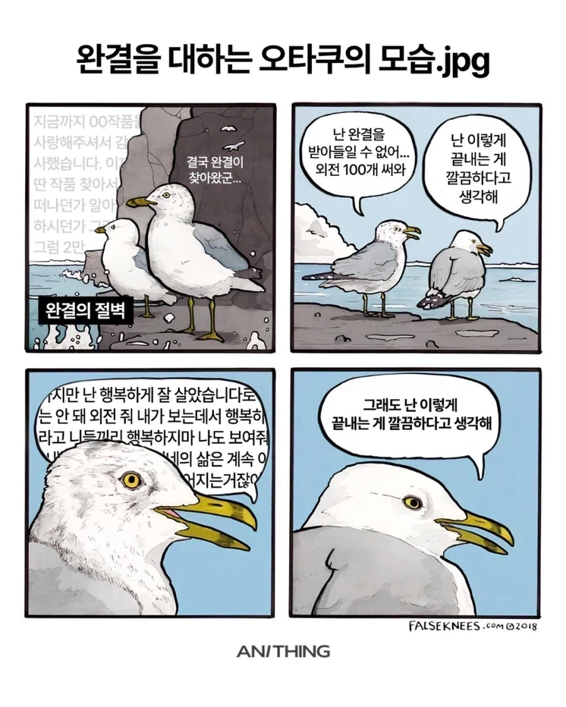

내가 보는데서 행복하라고 팍씨

내가 보는데서 행복하라고 팍씨

슈퍼 슈퍼
갓슈퍼를 대령하라

사스케 말인데 나름 감정적인 놈으로 기억하는데 보루토 보니 파판의 빈센트처럼 무뚝뚝한놈이 되어있더라고.
나루토 본지가 오래되서 햇갈리는데 원래 그런 성격이었음?
사스케 성격은 정상적인 변화임. 자상하던 형이 하루 아침에 일족 전부를 죽인 미친 살인마가 됐고, 형을 죽였더니 알고 보니 나뭇잎 상층부가 흑막이라고 하고. 충격적인 현실 때문에 계속 정신적으로 미쳐가서 단조 죽인 뒤엔 "나뭇잎 죄다 부숴버릴 거야!"라고 잼민이 땡강 같은 소리나 지껄일 정도로 정신 상태가 망가짐.
하지만 이타치 예토전생과의 만남, 역대 호카게들을 통한 상담으로 자신만의 답을 내리고 정신이 차분해졌고, 마지막엔 자신이 모두의 적이 되어 세상을 평화롭게 하겠다고 해서 나루토와 대립했지만, 나루토가 절대로 자신의 행복을 포기할 거 같지 않으니 뜻을 꺾음.
결국 모든 내적갈등을 정리했으니 성인 사스케는 더 이상 정신적으로 괴로워할 요소가 없어짐. 그러니 차분한 어른이 된 거. 쉽게 말해 사춘기 끝나고 어른 된 거임.
서태웅처럼 잘난척하고 열정적이던 놈이 죽은 생선처럼 변해서 캐릭터 해석에 문제가 있나 했는데 그게 정상이었다니... 나루토 다시한번 봐야겠다
걍 사춘기에 친형이 친척일가 몰살 시키고는 해외도주했는데 사스케 정도면 착하게 큰거지.
그리고 내용 진행하면서 왜 일가몰살 했는지 같은 뒷배경이야기도 듣고, 예토전생으로 살아난 형이랑 화해도하면서 감정정리 다함.
그 상태에서 결혼하고 애낳은 30대 중반이 됐는데 성숙해지기엔 충분한 시간이지
그래도 난 이렇게 끝내는게 깔끔하다고 생각해
완결 내는 것만 해도 감사하지
헌터헌터가 체인소맨 아래인 것처럼
어딜봐서 헌터헌터가 체인소 아래라고 평가해?
진짜 이런 평가는 머리털나고 첨 봐서 그럼 순수하게 궁금함
꼬우면 연재해!!!!! 빨리!!!!
체인이 병신같은 마무리지만 완결도 못 낼 헌헌에 비교당할 급은 아니지
나는 완결냇다고 다 같은 완결이 아니라 생각하거든
체인소는 완결보다는 유기햇다는게 맞는거 같아서 이걸 완결로 보는게 맞는가에 대한 의구심이 좀 잇음
그딴 완결도 완결이라고 헌헌 위 평가라면 출하당해 급하게 완결 찍 싸는것도 헌헌 위인가
당연한 걸 뭘 묻고 있어
요리를 시키면 맛대가리가 없어도 손님 앞에 갖다 둬야지
바로 걸려드네 ㅋㅋㅋㅋㅋ
꼬우면 연재하고 완결 쳐야지
던전밥 최고야
그런 질척거리는 팬들을 떼어내기 위한 2부의 행진
이누야샤 2부
나루토 2부
등등...
완결이라도 해준게 고맙지 중간에 끊은놈들 지옥에나 가라
로판 같은 건 저러고 웹툰화 때 돌아오고 드라마화 때 돌아오고 이럼
'체인소맨 시즌2'
완결 안남? 안봄ㅅㄱ
용두니미 vs 토가시발
가슴이 옹졸해진다 진짜
완결이 안 나서 용두니미도 아니고 연재는 하고 있어서 토가시발도 아닌 명탐정 코난은 뭐라고 불러야 하나.
어설프게 마무리해서 완결때리니까 외전으로 썰이라도 풀어달라는거지
잘풀어가서 끝내면 외전없어도 아 좋았다 하지
아쉬워서 2~3일은 여운 남긴 하지만
대부분 외전 없이 끝내는 게 가장 깔끔한 듯ㅋㅋ
나히아엔딩 오만팔만배
마 아쉬우니까 ts 말포이 같은게 나오는거야
열린결말로 끝내야지 상상할수있지
더 연재해봐야 뜬금없이 수백년뒤 후손보여주기, 주인공 닮은 아들딸 보여주기, 아들딸로 차기작 연재해서 ip 말아먹기 밖에 더 없잖아
아니면 2부의 악마와 계약해서 스토리 우주로 보내던가
예전에는 미완작이 제일 싫었어
극한의 저점을 본 지금은 차라리 미완연중 했었으면 좋겠어
키시모토: "그런 독자 분들을 위해 보루토를 준비했..."